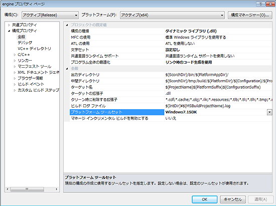

- まず、Visual Studio 2010系がらみのものをコントロールパネルからアンインストール (これ必須。これしないとインストールは成功しない)
- Microsoft Visual Studio 2010 ExpressよりをWebインストール
- この段階では、決してパッチ系のバージョンアップを適応してはならない。
(※この項目は32bit/64bitの両方でコンパイルしたい人向け。
天翔記関連で64bitコンパイルが必要となることは、現在のところありません)
Microsoft Windows SDK for Windows 7 and .NET FrameWork 4 (ISO)より、
これの GRMSDKX_EN_DVD.iso をダウンロード(これは64bit版)
マウントしてインストールするが、インストールオプション時に
上から５番目ぐらいの｢Visual C++ Compilers」の項目のチェックをはずす。
次に、HelpUpdateみたいなものが始まるので、Windows 7.1 SDKのみAddを押す。
(このヘルプは別にインストールの必要もないが)
- Visual Studio 2010 Service Pack 1を当てる。
(※この項目は32bit/64bitの両方でコンパイルしたい人向け。
天翔記関連で64bitコンパイルが必要となることは、現在のところありません)
Service Pack 1 コンパイラ更新プログラムを当てる。
(これ当てないと、事実上64bitではコンパイル出来ない)
- Direct X SDKなど必要なものは都度いれる。
- C:\Program Files (x86)\MSBuild\Microsoft.Cpp\v4.0\Platforms\x64にあるMicrosoft.Cpp.x64.default.propファイルを
<PlatformToolset Condition="'$(PlatformToolset)' == ''">v100</PlatformToolset>
↓
<PlatformToolset Condition="'$(PlatformToolset)' == ''">Windows7.1SDK</PlatformToolset>
というように、v100⇒Windows7.1SDKと置き換える。
- なお、64bitをターゲットとする時には、｢プロジェクト｣の｢構成プロパティ｣の｢全般｣の｢プラットフォームツールセット｣を｢Windows7.1SDK｣とする必要があるでしょう。
(そうでないと、Win系プログラムではコンパイル自体成功しないでしょう) 